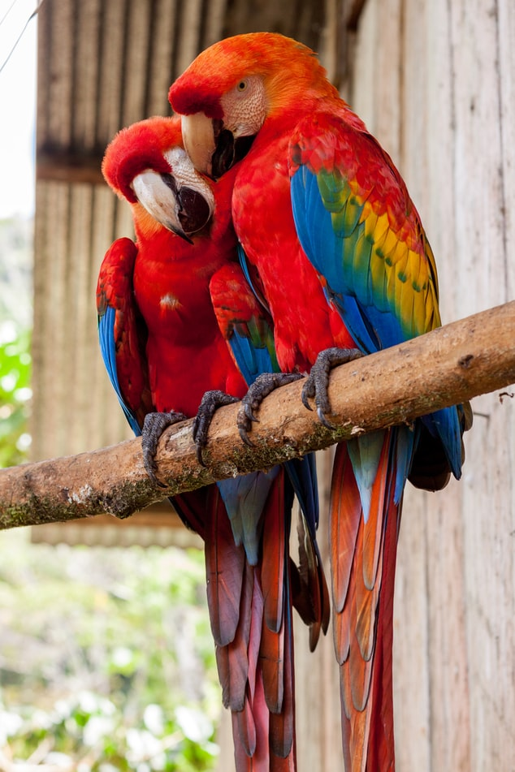
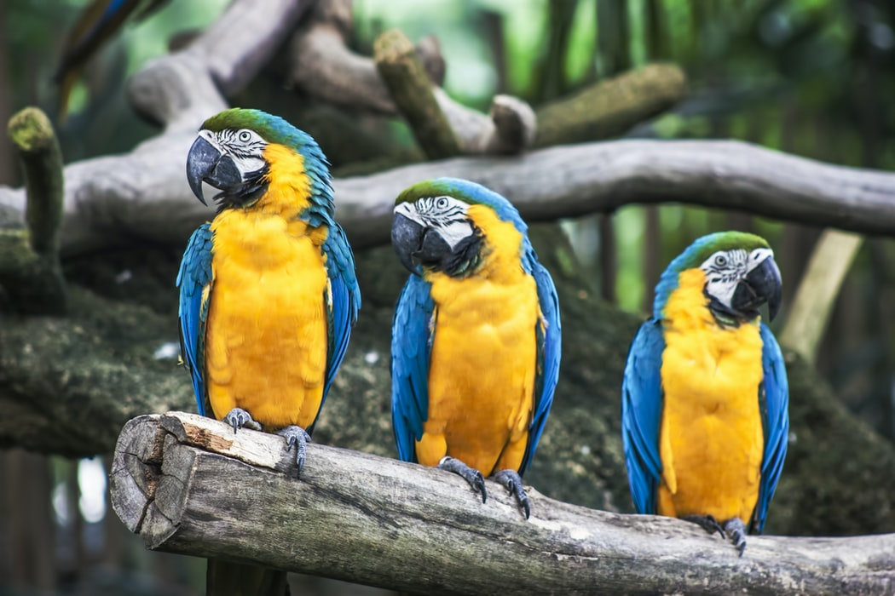

Vẹt Macaw (phát âm tiếng Việt như là Vẹt Mắc-ca) hay còn gọi là Vẹt đuôi dài là tập hợp đa dạng các loài vẹt có đuôi dài, từ nhỏ đến lớn, thường sặc sỡ màu sắc và thuộc về phân họ Vẹt Tân thế giới Arinae phân bố phần lớn ở Nam Mỹ. Nhiều loài trong số chúng được ưa chuộng để nuôi làm chim cảnh.
Trong Họ Vẹt (Psittacidae) hay (vẹt thực thụ) sáu phân loại được phân loài như vẹt đuôi dài là các chi: Ara, Anodorhynchus, Cyanopsitta, Primolius, Orthopsittaca, và Diopsittaca. Trước đây, các thành viên của chi Primolius được xếp trong chi Propyrrhura, nhưng trước đây là chính xác theo quy định ICZN.
Những con vẹt Macaw nguồn gốc ở Mexico, Trung Mỹ, Nam Mỹ, và trước đây là vùng biển Caribbe. Phần lớn các loài có liên quan đến môi trường rừng rậm, đặc biệt là rừng nhiệt đới, nhưng những loài khác thích môi trường sống như rừng hoặc thảo nguyên.
Những loài chim này thường to lớn, tối màu (thường là màu đen), đôi khi có các bản vá trên khuôn mặt nhỏ trong một số loài. Những con vẹt lớn nhất có chiều dài và sải cánh rộng là vẹt Macaw Xanh. Các con vẹt nặng nhất là vẹt Buffon, mặc dù thực tế các con vẹt nặng nhất là con vẹt Kakapo thì lại không thuộc nhóm vẹt này.
Các con vẹt đuôi dài của các chi Cyanopsitta, Orthopsittaca và Primolius thì nhỏ hơn đáng kể so với các thành viên của chi Anodorhynchus và Ara. Thành viên nhỏ nhất trong họ này là vẹt Macaw đỏ, là không lớn hơn một số loài parakeet của chi Aratinga. Vẹt đuôi dài, giống như vẹt khác, chim tu-căng (toucans) và chim gõ kiến, có các ngón chân của nó đầu tiên và thứ tư chỉ về phía sau.
Đa số các loài vẹt đuôi dài đang nguy cấp trong tự nhiên. Sáu loài đã tuyệt chủng, và loài Spix Macaw hiện nay được coi là đã tuyệt chủng trong tự nhiên. Các con vẹt Macaw lục lam cũng có thể đã tuyệt chủng, chỉ với hai cá thể đáng tin cậy của nhìn thấy trong thế kỷ 20. Những vấn đề lớn nhất đe dọa vẹt là tốc độ nhanh chóng của nạn phá rừng và đánh bẫy trái phép. Thương mại quốc tế đối với tất cả các loài vẹt được quy định bởi các Công ước về buôn bán quốc tế các loài động, thực vật hoang dã và động vật (CITES). Một số loài vẹt đuôi dài ví dụ, các Macaw Scarlet (Ara Macao) được liệt kê trong Phụ lục I và có thể không được giao dịch cho các mục đích thương mại. Các loài khác ví dụ, vẹt vai đỏ Macaw (Diopsittaca nobilis) được liệt kê trong Phụ lục II và có thể được hợp pháp giao dịch thương mại
Chế độ ăn uống và liếm đất sét của chúng thì vẹt Macaws ăn nhiều loại thực phẩm bao gồm hoa quả, trái cây cọ, các loại hạt, mầm, lá, hoa, và thân cây. Loài hoang dã có làm thể đi tìm thức ăn thô xanh với hơn 100 km (62 dặm) cho một số loài lớn hơn như (vẹt màu xanh và màu vàng) Ara araurana và Ara ambigua (vẹt lớn màu xanh lá cây), để tìm kiếm thức ăn theo mùa có sẵn.
Một số loại thực phẩm loài vẹt đuôi dài ăn trong tự nhiên có chứa chất độc hại mà chúng có thể tiêu hóa. Người ta cho rằng vẹt đuôi dài ở lưu vực sông Amazon ăn đất sét từ bờ sông, để trung hòa các chất độc này. Trong hàng trăm con vẹt đuôi dài và vẹt khác ở phía tây Amazon xuống đến bờ sông tiếp xúc với tiêu thụ đất sét hầu như hàng ngày ngoại trừ những ngày mưa
Trong nuôi nhốt thì vẹt Macaw yêu cầu một chế độ dinh dưỡng cao do kích thước lớn của chúng nên điều quan trọng là phải luôn có thức ăn sẵn ở trong lồng của chúng, trong hoang dã chúng ăn các loại quả hạch, hạt giống và thực vật. Thức ăn chứa 17-20% chất đạm để đảm bảo chúng có đủ sức khoẻ, không cho ăn ở đáy lồng nên để ở khay cao ngang mặt ngay tầm với của chúng.
Rau quả được rửa sạch, không để thức ăn thừa quá lâu tránh tình trạng thiu thối. Để bổ sung chất béo cho chúng hàng ngày cho chúng ăn hạt hạnh nhân hoặc có thay thế bằng các loại hạt có độ béo tương đương. Ngoài ra các có thể băm nhỏ bông cải xanh, bí ngô, rau xanh các loại và trộn lẫn với Calci, vitamin, các chất khoáng, sinh tố A (là sinh tố quan trọng nhất cho chim về chức năng não, hệ thống miễn dịch và giúp cho mắt) rồi cho chúng ăn bổ sung.
Để bổ sung vitamin A, có thể cho vẹt macaw ăn khoai tây luộc chín, đồng thời có thể cho ăn kết hợp các loại hoa quả như táo, lê, nên cắt miếng nhỏ để tránh lãng phí và không cho ăn quá 2-3 lần/ tuần. Nếu con vẹt macaw dấu hiệu thiếu chất dinh dưỡng, cho ăn bổ sung hạt hướng dương vằn,hướng dương trắng, lạc, yến mạch nguyên vỏ, hạt ngô, hạnh nhân, kiều mạch, hạt gai dài.